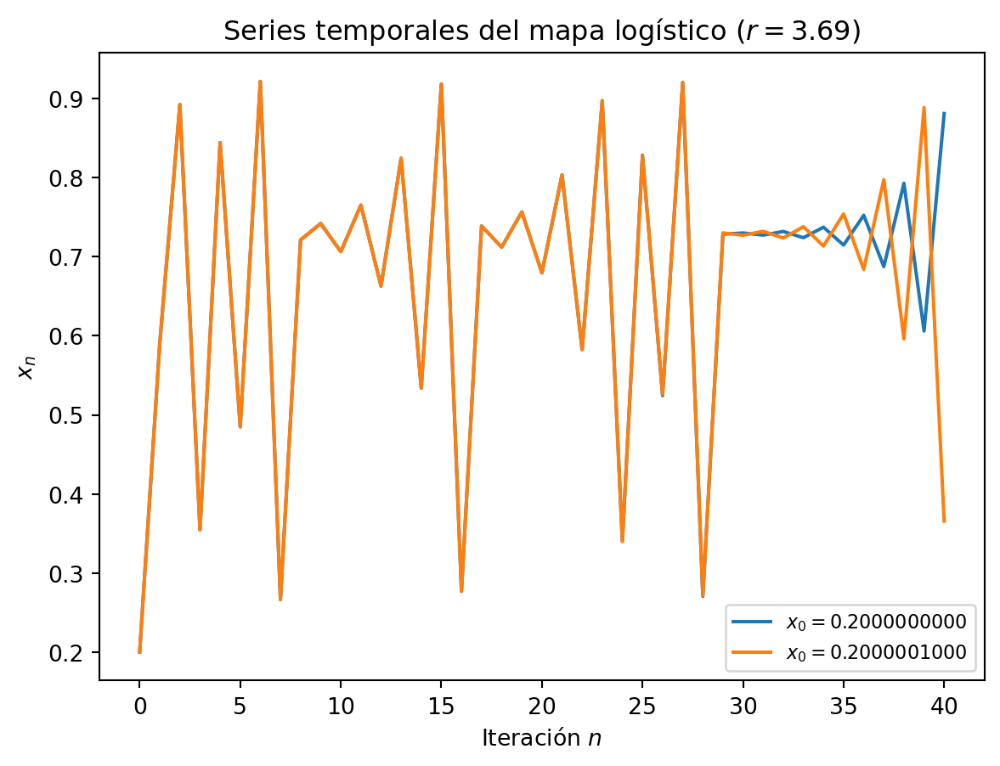
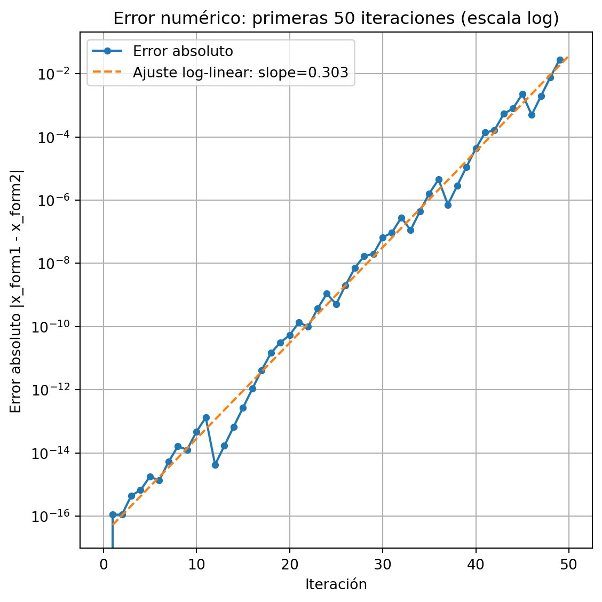
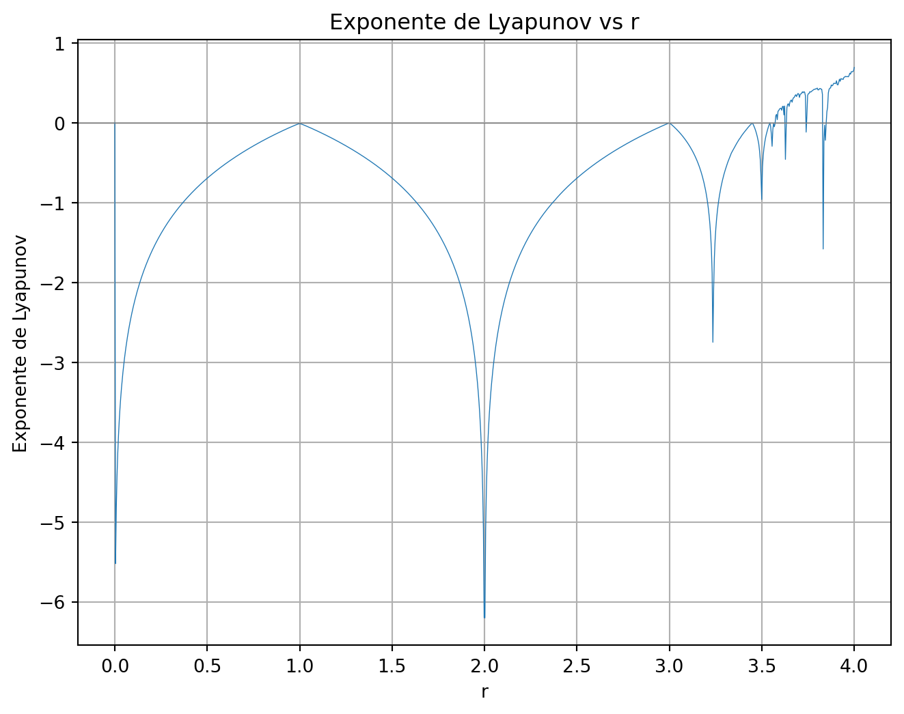

13 Efecto mariposa
13.1 Sensibilidad a las condiciones iniciales
Cuando estamos en la zona estable del mapa logístico, desde cualquier valor de \(x_0\) del que partamos, llegaremos siempre hasta el mismo valor final, bien sea el punto fijo que hemos calculado previamente, o cualquiera de los valores de las órbitas periódicas. Por ejemplo, para \(r=2.8\)
Y para \(r=3.1\), vemos como también los puntos alcanzados son los mismos para valores próximos de inicio de la sucesión.
En los dos casos anteriores, no parece que la evolución del sistema sea sensible a la condición inicial de partida. Tras unas pocas iteraciones, da igual de donde se parta, que se converge al mismo punto.
Pero, ¿qué pasa cuando estamos en las zonas caóticas?. Veamos la iteración del mapa logístico para \(r=3.69\) partiendo de dos valores muy similares, que solo se separan en \(10^{-5}\) unidades.
A la vista del gráfico, vemos como a partir de la iteración 10 empiezan a haber pequeñas diferencias que se van amplificando a medida que avanza la simulación. Aquí vemos que sí que empieza a haber sensibilidad a las condiciones iniciales.
Probemos con una diferencia de valores iniciales aún mas pequeña, en este caso \(10^{-7}\) unidades.

Ahora la separación de ambas simulaciones se produce a partir de la iteración número 30. Vamos con una diferencia aún mas pequeña, ahora \(10^{-10}\) unidades.
La separación entre ambas curvas empieza a hacerse visible a partir de la iteración 50. ¿Qué pasa si hacemos la diferencia aún más pequeña, en este caso \(10^{-15}\) unidades?. Pues como vemos en la siguiente gráfica, a partir de la iteración 85 empezamos a ver la divergencia de ambas sucesiones.
¿Qué está pasando aquí?. ¿Cómo puede ser que dos valores iniciales que se diferencian en un valor tan pequeño como \(10^{-15}\) unidades den valores tan diferentes tras 100 iteraciones?. Si las unidades fueran metros, estaríamos hablando de una diferencia de un femtómetro. Y aún más importante: si quiero simular un sistema físico como éste en la región caótica, ¿cómo voy a poder medir su condición inicial con tal precisión?. De hecho, parece que la precisión requerida sería infinita. A poco que me equivoque en la estimación de la condición inicial, no voy a poder calcular bien su estado final pasado un número grande de iteraciones. ¿Cómo puede ser si mi sistema es determinista y está regido por una ecuación tan sencilla?. Hemos topado con el caos y el efecto mariposa. Y lo inquietante es que este fenómeno se da en sistemas físicos como la meteorología.
13.1.1 Inestabilidad de los cálculos numéricos
Cuando nos encontramos con un sistema físico con alta dependencia a las condiciones iniciales, no solamente tenemos el problema de conocer con total exactitud el estado inicial del sistema, sino que como veremos a continuación los cálculos numéricos que hacemos en nuesto ordenador para estudiar su evolución se vuelven también muy inestables. A continuación pondré un ejemplo sobre lo que acabo de decir.
Pongamos que quiero simular el mapa logístico tal cual lo he estado haciendo en las secciones anteriores. La fórmula es superconocida (form1):
\[ x_{n+1} = r\,x_n\,(1 - x_n) \]
Pero también podríamos expresarlo como (form2):
\[ x_{n+1} = r\,x_n - r\,{x_n}^2 \]
Matemáticamente son equivalentes pero a un computador le estamos diciendo cosas diferentes. * En el primer caso le decimos que reste 1 menos {x_n}, y que a continuación lo multiplique por \(r\) y \(x_n\). En total 1 resta y dos multiplicaciones * En el segundo caso le decimos que multiplique por \(r\) y \(x_n\) por un lado. Por otro lado que que eleve \(x_n\) al cuadrado, y que lo multiplique por \(r\). Y al final que reste el primer resultado intermedio menos el segundo. En total 1 resta, 2 multiplicaciones y 1 cuadrado.
A esto hay que añadir que en un ordenador los números decimales se representan mediante aproximaciones. Por ejemplo, con 32 bits,el número 0.2 se representa como 0.200000003, debido a la precisión finita que dan los 32 bits. Por lo tanto entre el número real y el que representamos, la mayoría de veces va a haber un error. Estos errores se comportarán de manera diferente según los cálculos aritméticos que hagamos con ellos. En el siguiente plot, vemos los errores en un ordenador entre las dos fórmulas al partir del valor \(x_0=0.2\) y con un \(r=4\).
Vemos como al principio el error es imperceptible, pero a media que avanzamos va creciendo. A partir de la iteración 50 este error se hace ya notable, y desde entonces se puede decir que ambas fórmulas evolucionan de forma totalmente distinta. Por lo tanto, vemos como en un sistema caótico, no sólo las condiciones iniciales determinan el valor final de forma extrema, sino que también cuando simulamos este sistema en una máquina computacional, la forma en la que se representan los números y la forma de las operaciones también influyen de forma muy notable.
Pero vamos a ir un paso más. Veamos que evolución tienen realmente los errores. Para poder bien los errores al principio y al final, vamos a usar una escala logarítmica en el eje Y. El resultado se muestra a continuación.

¿Qué es lo que vemos?. Que los errores crecen linealmente dentro de la escala logarítmica.
En escala \(\log_{10}\) hemos ajustado: \[ \log_{10}(\mathrm{error}_n)\approx 0.303\,n + C \] donde \(C\) es la ordenada en el origen. Pasando de logaritmos a forma explícita: \[ \mathrm{error}_n \approx 10^C \times 10^{0.303\,n} = A\,\bigl(10^{0.303}\bigr)^n \approx A\,2^n, \] puesto que \(10^{0.303}\approx2\).
Equivalentemente, en base \(e\): \[ \ln(\mathrm{error}_n) = \ln(10)\,\log_{10}(\mathrm{error}_n) \approx (0.303\,\ln 10)\,n + \ln A \approx 0.698\,n + \ln A, \] de donde \[ \mathrm{error}_n \approx A\,e^{0.698\,n}\approx A\,(2.01)^n. \]
Conclusión. El error crece de forma exponencial con \(n\), aproximadamente duplicándose en cada iteración.
Curioso, ¿verdad?. El error se va multiplicando por 2 en cada iteración. Por 2 exactamente. ¿A qué se debe esto????
13.2 Cálculo matemático de la amplificación de desviaciones iniciales
A continación daremos una explicación matemática a este fenómeno que estamos observando.
Imagina que quieres predecir el tiempo atmosférico. Nunca conoces la temperatura, presión o humedad con absoluta precisión: siempre hay un error mínimo en la medición. Si ese error crece muy despacio, podrías predecir con confianza varios días por delante. Pero si crece muy rápido, tu predicción se vuelve inútil en muy poco tiempo.
En los siguientes párrafos, veros un concepto matemático muy útil en el estudio del caos: el exponente de Lyapunov, que llamaremos \(\lambda\) y que cuantifica la tasa de crecimiento de estos errores.
13.2.1 Error inicial
- Sea \(x_0\) el estado “verdadero” del sistema en el tiempo inicial.
- Tu medida real tiene un pequeño error \(\delta_0\), de modo que en realidad partes de
\[ x_0 + \delta_0, \quad\text{con}\;|\delta_0|\ll 1. \]
Ese \(\delta_0\) es tan pequeño que, al principio, los dos estados están casi juntos. Es lo que hemos visto en los ejemplos anteriores, donde en la primera iteración las dos simulaciones estaban casi juntas.
13.2.2 Cómo evoluciona el error
Supón que el sistema avanza según una regla \(f\) (nuestra función logística), es decir: \[ x_{n+1} = f(x_n). \] Queremos ver qué sucede con \(\delta_n\), la diferencia en el paso \(n\). Para ello:
Linealizamos la función \(f\) alrededor de \(x_n\).
Si \(f\) es suave, podemos aproximar \[ f(x_n + \delta_n) \approx f(x_n) + f'(x_n)\,\delta_n, \] donde \(f'(x_n)\) es la derivada (o pendiente) de \(f\) en \(x_n\).De esta aproximación se deduce que \[ \delta_{n+1} = f(x_n + \delta_n) - f(x_n) \approx f'(x_n)\,\delta_n. \]
Pero ojo. Cuando calculamos errores, siempre son distancia, es decir debe ser siempre un número no negativo. La derivada indica pendiente y sentido.Cuando linealizamos
\[
f(x_n + \delta_n)\approx f(x_n) + f'(x_n)\,\delta_n,
\]
el término \(f'(x_n)\,\delta_n\) nos da cuánto y en qué dirección cambia la diferencia \(\delta_n\).
La distancia ha de ser siempre no negativa. Por tanto, definimos : \[
\delta_{n+1} = \bigl|\,x'_{n+1} - x_{n+1}\bigr|.
\]
Sin valor absoluto, un \(f'(x_n)<0\) haría que la “distancia” resultase negativa, lo cual no tiene sentido para una medida de error.
El verdadero error en módulo es \(\bigl|f'(x_n)\bigr|\)$ porque:
- Si \(\lvert f'(x_n)\rvert>1\), la distancia aumenta
- Si \(\lvert f'(x_n)\rvert<1\), la distancia disminuye
Pongamos un ejemplo numérico: Supongamos \(f'(x_n)=-2\) y \(\delta_n=0.01\):
- Sin valor absoluto:
\[ \delta_{n+1}\approx(-2)\times0.01=-0.02\quad(\text{sin sentido físico}). \]
- Con valor absoluto:
\[ \delta_{n+1}\approx\bigl|-2\bigr|\times0.01=2\times0.01=0.02, \]
reflejando correctamente que la distancia se duplica.
Por todo ello, la fórmula adecuada para la evolución del error es
\[
\delta_{n+1} \approx \bigl|f'(x_n)\bigr|\,\delta_n,
\]
garantizando que \(\delta_{n+1}\ge0\) y midiendo la magnitud real del estiramiento en cada paso.
13.3 Errores sucesivos
Si repetimos la relaciones anterior paso a paso obtenemos
Primera iteración
\[ \delta_1 \approx \bigl|f'(x_0)\bigr|\,\delta_0. \]Segunda iteración. En este caso es la derivada en \(x_1\) multiplicado por el error anterior (utilizamos para el error anterior la fórmula del paso 1). En total vemos que el error en la segunda iteración, es el error inicial multiplicado por dos derivadas. \[ \delta_2 \approx \bigl|f'(x_1)\bigr|\,\delta_1 \approx \bigl|f'(x_1)\bigr|\;\bigl|f'(x_0)\bigr|\;\delta_0. \]
Tercera iteración. Aquí ya vemos como aparece un patrón. Vamos multiplicando el error inicial por las sucesivas derivadas. \[ \delta_3 \approx \bigl|f'(x_2)\bigr|\,\delta_2 \approx \bigl|f'(x_2)\bigr|\;\bigl|f'(x_1)\bigr|\;\bigl|f'(x_0)\bigr|\;\delta_0. \]
En general, para cualquier (n) podemos generalizar el patrón encontrado:
\[
\delta_n
\;\approx\;
\Bigl(\prod_{k=0}^{n-1}\bigl|f'(x_k)\bigr|\Bigr)\;\delta_0.
\]
13.4 De producto a suma
Para manejar productos es muy útil usar los logaritmos, porque transforman productos en sumas: \[ \ln\bigl(\delta_n/\delta_0\bigr) = \ln\Bigl(\prod_{k=0}^{n-1} f'(x_k)\Bigr) = \sum_{k=0}^{n-1}\ln\bigl|f'(x_k)\bigr|. \]
Esta formula nos da el logaritmo de cuánto ha crecido el error tras n iteraciones en relación al error inicial.
13.5 Definición del exponente de Lyapunov \(\lambda\)
Sabemos según la fórmula anterior, cuánto ha crecido el error en \(n\) iteraciones. Ahora bien, estaría mejor saber cuanto crece de media por cada iteración. Para ello, solo tenemos que dividir la suma anterior entre \(n\).
\[ \frac{1}{n}\,\sum_{k=0}^{n-1}\ln\bigl|f'(x_k)\bigr|. \]
Ahora vamos a suponer que la simulación es muy larga y que queremos hacer un promedio. Para ello tomamos el límite cuando \(n\to\infty\) de la expresión anterior: \[ \lambda = \lim_{n\to\infty} \frac{1}{n}\,\sum_{k=0}^{n-1}\ln\bigl|f'(x_k)\bigr|. \]
Este factor \(\lambda\) es lo que crece de media el error en cada iteración en mi sistema. LO que crece de forma logarítmica. Lo que crece realmente en magnitud en cada iteración es \(e^\lambda\)
- Si \(\lambda>0\), el error crece con cada iteracion, puesto que el número \(e\) elevado a un valor positivo siempre da un número mayor que 1. Puesto que multiplico mi error por un número mayor que 1, el error va creciendo iteración tras iteración (\(e^\lambda\)\(e^\lambda\)\(e^\lambda\)……=\((e^\lambda)^n\)=\(a^n\) con \(a>1\)) . Crece por lo tanto exponencialmente, y el sistema es caótico (muy sensible a la precisión inicial).
- Si \(\lambda<0\), el error se atenúa y las trayectorias convergen (sistema estable).La argumentación es justa la contraria del caso anterior. El número \(e\) elevado a un valor negativo siempre da un número menor que 1.
- Si \(\lambda=0\), estamos en un caso límite de inestabilidad neutra.
13.6 Cálculo del exponente de Lyapunov para el mapa logístico
Consideramos el mapa logístico
\[
x_{n+1} = f(x_n) = r\,x_n\,(1 - x_n),
\]
La derivada de \(f\), tal y como hemos visto en anteriores secciones, es
\[
f'(x) = r\,(1 - 2x).
\]
Por lo tanto, si tenemos una sucesión de puntos compuesta por \(x_0, x_1, \dots, x_{N}\), el exponente de Lyapunov máximo se calculará a partir de la multiplicación de las derivadas de la función logística en cada uno de los puntos de la sucesión, es decir,
\[ \lambda = \lim_{N\to\infty} \frac{1}{N} \sum_{n=0}^{N-1} \ln\bigl|f'(x_n)\bigr| = \lim_{N\to\infty} \frac{1}{N} \sum_{n=0}^{N-1} \ln\bigl|r\,(1 - 2x_n)\bigr|. \]
En la práctica, no podemos llevar la sucesión al infinito, por lo que tomamos N iteraciones y aplicamos la siguiente fórmula aproximada
\[
\lambda_N = \frac{1}{N} \sum_{k=0}^{N-1} \ln\bigl|f'(x_k)\bigr|
= \frac{1}{N} \sum_{k=0}^{N-1} \ln\bigl|4\,(1 - 2x_k)\bigr|.
\]
Al aumentar \(N\), \(\lambda_N\) tenderá a \(\lambda\).
13.6.1 Ejemplo numérico sencillo (\(N=20\))
Vamos a calcular el exponente de Lyapunov para el caso de \(r=4\). Tal y como vimos en las simulaciones que hicimos en el primer apartado, con \(r=4\) se prevé que el error se vaya doblando en cada paso, o lo que es lo mismo, que el exponente de Lyapunov sea \(\lambda = \ln 2 \approx 0.6931\)
Tomemos de nuevo el mapa logístico con \(r = 4\), es decir, \[ f(x) = 4x(1 - x), \] y su derivada \[ f'(x) = 4(1 - 2x). \] Queremos calcular el exponente de Lyapunov aproximado usando \(20\) iteraciones, empezando con \[ x_{0} = 0.3000 \] Para ello, iremos calculando sucesivamente cada \(x_{n+1} = f(x_{n})\), el valor absoluto de la derivada \(\lvert f'(x_{n})\rvert\), y luego \(\ln\lvert f'(x_{n})\rvert\). Mostraremos en la siguiente tabla \(x_{n}\) redondeado a cuatro cifras decimales, \(\lvert f'(x_{n})\rvert\) redondeado a cuatro cifras decimales, y \(\ln\lvert f'(x_{n})\rvert\) redondeado a tres cifras decimales.
| \(n\) | \(x_{n}\) | \(|f'(x_{n})|\) | \(\ln|f'(x_{n})|\) |
|---|---|---|---|
| 0 | 0.3000 | \(|4(1 - 2\cdot0.3000)| = 1.6000\) | 0.470 |
| 1 | 0.8400 | \(|4(1 - 2\cdot0.8400)| = 2.7200\) | 1.001 |
| 2 | 0.5376 | \(|4(1 - 2\cdot0.5376)| = 0.3008\) | -1.201 |
| 3 | 0.9953 | \(|4(1 - 2\cdot0.9953)| = 3.9548\) | 1.375 |
| 4 | 0.0186 | \(|4(1 - 2\cdot0.0186)| = 3.8201\) | 1.340 |
| 5 | 0.0879 | \(|4(1 - 2\cdot0.0879)| = 3.2964\) | 1.193 |
| 6 | 0.3208 | \(|4(1 - 2\cdot0.3208)| = 1.4332\) | 0.360 |
| 7 | 0.8716 | \(|4(1 - 2\cdot0.8716)| = 2.9729\) | 1.090 |
| 8 | 0.4476 | \(|4(1 - 2\cdot0.4476)| = 0.4191\) | -0.870 |
| 9 | 0.9890 | \(|4(1 - 2\cdot0.9890)| = 3.9122\) | 1.364 |
| 10 | 0.0434 | \(|4(1 - 2\cdot0.0434)| = 3.6526\) | 1.295 |
| 11 | 0.1661 | \(|4(1 - 2\cdot0.1661)| = 2.6708\) | 0.982 |
| 12 | 0.5542 | \(|4(1 - 2\cdot0.5542)| = 0.4333\) | -0.836 |
| 13 | 0.9883 | \(|4(1 - 2\cdot0.9883)| = 3.9061\) | 1.363 |
| 14 | 0.0464 | \(|4(1 - 2\cdot0.0464)| = 3.6289\) | 1.289 |
| 15 | 0.1770 | \(|4(1 - 2\cdot0.1770)| = 2.5844\) | 0.949 |
| 16 | 0.5826 | \(|4(1 - 2\cdot0.5826)| = 0.6605\) | -0.415 |
| 17 | 0.9727 | \(|4(1 - 2\cdot0.9727)| = 3.7819\) | 1.330 |
| 18 | 0.1061 | \(|4(1 - 2\cdot0.1061)| = 3.1512\) | 1.148 |
| 19 | 0.3794 | \(|4(1 - 2\cdot0.3794)| = 0.9651\) | -0.036 |
Cada fila se interpreta así:
- Calculamos \(x_{n+1} = 4\,x_{n}\,(1 - x_{n})\) usando el valor exacto de \(x_{n}\) y luego redondeamos el resultado a cuatro decimales para mostrarlo.
- Evaluamos la derivada en el valor exacto de \(x_{n}\): \(f'(x_{n}) = 4(1 - 2x_{n})\), tomamos su valor absoluto, y lo redondeamos a cuatro decimales.
- Finalmente, calculamos \(\ln\lvert f'(x_{n})\rvert\) a partir del valor de la derivada ya redondeada, y lo redondeamos a tres decimales.
Ahora sumamos todos los logaritmos obtenidos: \[ \begin{aligned} \sum_{k=0}^{19} \ln\lvert f'(x_{k})\rvert \;=\;& 0.470 + 1.001 \;-\; 1.201 + 1.375 + 1.340 + 1.193 + 0.360 + 1.090 \;-\; 0.870 + 1.364 \\ &+ 1.295 + 0.982 \;-\; 0.836 + 1.363 + 1.289 + 0.949 \;-\; 0.415 + 1.330 + 1.148 \;-\; 0.036 \\ =\;& 13.191. \end{aligned} \] Por último promediamos esta suma, por lo que el exponente de Lyapunov aproximado para \(N = 20\) queda como \[ \lambda_{20} = \frac{1}{20} \sum_{k=0}^{19} \ln\lvert f'(x_{k})\rvert = \frac{13.191}{20} = 0.6596. \]
Como vemos, el valor \(0.6596\) es muy próximo al teórico \(0.6931\). De hecho, \(e^{0.6596}=1.934\) que está muy cerca de \(2\).
Para \(N = 20\) hemos obtenido \(\lambda_{20} \approx 0.6596\). Si continuáramos con más iteraciones, como \(N = 100\) o \(N = 1000\), veríamos que \(\lambda_{N}\) se acerca gradualmente a \(0.6931\). Esto muestra que, aunque las primeras iteraciones pueden desviarse, al promediar sobre muchas iteraciones el resultado converge al valor exacto del exponente de Lyapunov para \(r = 4\).
13.6.2 Cálculo del coeficiente de Lyapunov para todo el mapa logístico
Vamos a aplicar este procedimiento para todos los valores de \(r\) en el mapa logístico. Y vamos a ser más precisos; para cada valor de \(r\) haremos 1000 iteraciones en lugar de 20, calcularemos la derivada en cada uno de los puntos, y sumaremos sus logaritmos. El resultado es el que se muestra a continuación

Vamos a interpretar esta gráfica, y ver si cuadra con los conocimientos previos del mapa logístico.
Para valores \(0 < r \le 1\), sabemos que todas las iteraciones convergen al punto fijo \(x^* = 0\). Por lo tanto el exponente de Lyapunov: \(\lambda(r) < 0\) ya que no estamos en la zona caótica.
Para \(r = 1\), la ecuación del mapa logístico es \[ x_{n+1} \;=\; 1 \cdot x_n \,(1 - x_n) \;=\; x_n \,(1 - x_n). \]
Los puntos fijos (soluciones de \(x^* = x^*(1 - x^*)\)) se determinan resolviendo \[ x^* = x^*(1 - x^*) \quad\Longrightarrow\quad x^*(1 - (1 - x^*)) = 0 \;\Longrightarrow\; x^* \bigl(1 - 1 + x^*\bigr) = 0 \;\Longrightarrow\; x^* \cdot x^* = 0. \]
Por tanto, el único punto fijo es \[ x^* = 0. \]
La derivada del mapa general es \[ f'(x) = r\,(1 - 2x). \]
Si evaluamos en \(r = 1\) en el punto fijo \(x^* = 0\), obtenemos \[ f'(x^*) \;=\; 1 \cdot \bigl(1 - 2 \cdot 0\bigr) \;=\; 1. \]
Es decir, las iteraciones siempre terminan en una derivada igual a 1, cuyo logaritmos es cero. Por eso el coeficiente de Lyapunov promediado es cero.
Para valores \(1 < r < 3\), vemos que de nuevo el exponente es negativo. En esta zona la función logística tiende a valores estables comprendidos entre 0 y 1, pero ni es caótica ni periódica. Podemos verlo matemáticamente, ya que sabemos que en esta zona el mapa logístico tiende al punto fijo \(1-1/r\), y si evaluamos la derivada de la función logística en ese punto fijo tenemos \(2 - r\), y como \(1<r<3\) se tiene \(-1 < 2 - r < 1\), de modo que \(|2 - r|<1\) y por tanto \(\lambda(r) = \ln|2 - r| < 0\). Es decir, se suman logaritmos que son siempre negativos, por lo que el promedio final nunca podrá ser positivo.
Para \(r = 3\) sabemos que el mapa logístico tiende a \[ x^* \;=\; 1 - \frac{1}{3} \;=\; \frac{2}{3}. \]
Evaluándola la derivada en este punto \(x^* = \tfrac{2}{3}\) para \(r = 3\): \[ f'\bigl(x^*\bigr) = 3 \cdot \Bigl(1 - 2 \cdot \tfrac{2}{3}\Bigr) = 3 \cdot \Bigl(1 - \tfrac{4}{3}\Bigr) = 3 \cdot \Bigl(-\tfrac{1}{3}\Bigr) = -1. \]
Que en valor absoluto es 1, y por lo tanto al igual que el caso con \(r=1\), el exponente de Lyapunov es cero.
Para \(3 < r < r_2 \approx 3.4495\) sabemos que existe un ciclo estable de periodo 2. \(\lambda(r)\) en este rango vuelve a ser negativo, porque aunque ya no convergemos a un punto fijo, sí converge a un ciclo de periodo 2. En el límite \(r \to r_2\), \(\lambda(r)\) se acerca nuevamente a 0, pues se produce la segunda bifurcación hacia un ciclo de periodo 4.
En todos los ciclos restantes hasta \(r_\infty \approx 3.5699456\dots\)* tenemos el mismo comportamiento, valores negativos en las zonas de los ciclos y acercandose a cero cuando cambiamos de periodo.
Para \(r_\infty < r \le 4\)** vemos que en la mayoría de estos \(r\) en los que sabemos que el sistema es caótico se cumple que \(\lambda(r) > 0\). Sin embargo, dentro de este intervalo caótico aparecen “ventanas” periódicas (por ejemplo, cerca de \(r\approx 3.8284\), donde hay un ciclo de periodo 3). En esas ventanas periódicas \(\lambda(r)\) vuelve a ser negativo. Justo en el borde de cada ventana periódica (bifurcaciones dentro del caos) se tiene \(\lambda(r)=0\). En la vecindad de \(r = 4\), el valor promedio exacto es \(\lambda(4) = \ln 2 \approx 0.6931\) tal y como habíamos visto.